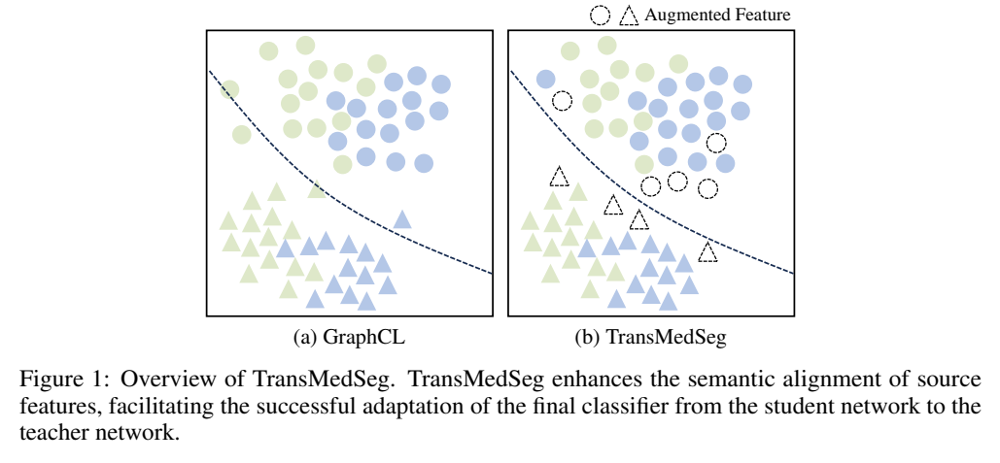
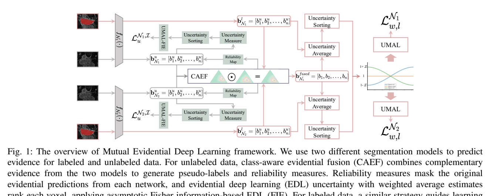
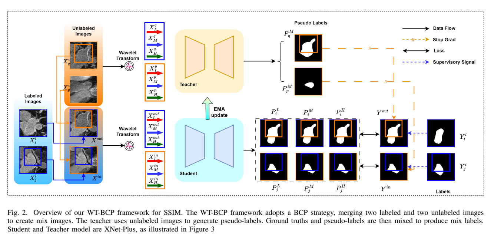

原论文流程图 · Figure 1 · PDF 第 2 页

Figure 1: Overview of TransMedSeg. TransMedSeg enhances the semantic alignment of source features,facilitatingthesuccessfuladaptationofthefinalclassifierfromthestudentnetworktothe teachernetwork. 原文来源
论文针对半监督医学图像分割（SSMIS）。作者认为现有方法主要依赖一致性正则与伪标签，存在两个限制：一是不同临床站点、扫描协议和成像模态造成解剖表征的域偏移；二是特征学习过度依赖少量源标注，伪标签会放大源数据偏差，在类别极不平衡时导致稀有病灶欠分割 [p. 2]。作者以 GraphCL 为基座，指出其图结构建模缺少处理域偏移的机制 [p. 3]，因此提出 TransMedSeg，希望在教师-学生框架中显式建模跨域特征差异，同时保持解剖结构一致性 [p. 2]。
数据与任务设定。 输入为 3D 体数据 X∈R^{C×W×H×D}，输出体素标签 Y∈{0,…,k−1}^{W×H×D}；数据集 D=D_l∪D_u，D_l 含 N 个标注体，D_u 含 M≫N 个无标注体 [p. 3]。训练时构造混合样本：从标注图像 X_l^j 取前景放到无标注 X_u^n 得 X_out，从无标注 X_u^m 取区域放到标注 X_l^k 得 X_in [p. 3]。
师生统计与扰动。 学生网络 f_stu 在标注源域上训练，教师网络 f_tea 适配无标注目标域。对每个类 c，源统计 μ_c^s=E[f_stu(x_s)]、Σ_c^s=Cov(f_stu(x_s))；目标统计 μ_c^t、Σ_c^t 由教师对高置信伪标签像素做 EMA 在线聚合 [p. 2, p. 4]。跨域变换建模为 z_c∼N(Δμ_c, Σ_c^t)，其中 Δμ_c=μ_c^s−μ_c^t 表示系统偏移，Σ_c^t 保留类内解剖变化 [p. 4]。实际采样用 T^c∼N(αΔμ_c, αΣ_c^t)，α∈[0,1] 控制适配强度，增强特征为 f̃=f+δ [p. 4]。教师参数按 θ_tea←λθ_tea+(1−λ)θ_stu 做 EMA 更新 [p. 4]。
显式损失到隐式上界。 显式增强对每个源像素采样 M 次，损失为 L_tsa=(1/(n_s M))Σ_iΣ_m ℓ(f_{c,i}^s+δ_m, y_i^s)，ℓ 为带分类器权重 w_c、偏置 b_c 的 softmax 交叉熵 [p. 5, Eq. 5–6]。为免去多次采样，作者用 ISDA 思路令 M→∞，由大数定律得到期望风险，再用 Jensen 不等式 E[log X]≤log E[X] 导出上界 [p. 5, Eq. 7–8]。最终损失 L_TransMedSeg=L_GraphCL+βL_tsa，β 控制 TSA 权重 [p. 6, Eq. 9]。
与 GraphCL 的结合。 GraphCL 使用编码器-解码器、图卷积传播区域特征，并以 Dice+交叉熵训练；TransMedSeg 保留其混合样本与伪标签流程，仅叠加 L_tsa [p. 5–6]。图 1（p. 2）示意 TSA 使教师特征向学生语义对齐；图 2（p. 3）示意按类用域间均值差与目标类内协方差增强教师特征。
作者主张三点：显式建模域偏移的特征对齐模块；协方差感知、保持解剖合理性的增强；在多个基准上取得更优性能 [p. 3]。我的理解是：核心新意在于把域适应中的 ISDA 式隐式语义增强迁移到 SSMIS 的师生统计上，并以闭式上界替代显式采样；GraphCL 提供半监督骨架，TSA 是附加损失项。
数据集与划分。 ACDC：100 例心脏 MRI，70 训练/10 验证/20 测试，4 类 [p. 6]。Pancreas-NIH：82 例增强腹部 CT，512×512 平面分辨率，切片数 181–466，软组织窗 [−120,240] HU，25 体素边距裁剪，训练随机裁 96×96×96；遵循 CoraNet/BCP 设置 [p. 6]。LA：100 例 3D 钆增强 MRI，0.625×0.625×0.625 mm³，80 训练/20 测试；半监督取 4 例（5%）标注 [p. 6]。指标为 Dice、Jaccard、95HD、ASD，前两者越高越好，后两者越低越好 [p. 6]。
主要结果（按正文与表 1–3 可辨认数字）。 LA 10%（8 例）标注：Dice 89.62%、Jaccard 81.31%、95HD 6.68；5%（4 例）：Dice 87.65%、Jaccard 78.24% [p. 6–7]。ACDC 10%（7 例）：Dice 89.96%、Jaccard 82.31%、95HD 1.61、ASD 0.64；5%（3 例）：Dice 88.14%、Jaccard 79.48%、95HD 3.42、ASD 0.97 [p. 7–8]。Pancreas 20%（12 例）：Dice 83.06%、Jaccard 71.26%、95HD 5.67、ASD 1.51 [p. 7–8]。正文称均优于 GraphCL 等基线；例如 ACDC 10% 下 GraphCL 为 Dice 88.92%、95HD 3.90、ASD 1.04 [p. 7]。
消融。 表 4 在 ACDC 与 Pancreas 上去掉/加入 L_tsa：ACDC 5% 下 Dice 87.96→88.14、Jaccard 79.26→79.48、95HD 4.10→3.42、ASD 1.28→0.97；ACDC 10% 下 88.92→89.96、80.85→82.31、3.90→1.61、1.04→0.64；Pancreas 20% 下 82.78→83.06、70.84→71.26、8.00→5.67、2.86→1.51 [p. 8]。t-SNE 图 3(a–b) 被用来支持 L_tsa 使特征簇更分离 [p. 8]。β 敏感性：0.2–1.0 较稳定，0.4 最佳 [p. 8, Fig. 3c–d]。定性图 4–5 展示 ACDC 与 Pancreas 上更贴近 GT 的轮廓 [p. 8–9]。
需要注意的证据问题。 表 1–3 在 PDF 文本中排版严重错乱，多行数字与行标签无法可靠对应；例如 LA 表中 5%/10% 与各方法的对应关系、以及部分数值（如 95HD 6.68 与 1.75 的归属）无法从文本确认 [p. 7]。正文称 LA 5% 下 Dice 87.65%，但表 3 区域又出现 87.65/78.24/8.71/2.25 一行，归属不清 [p. 7]。此外正文说 ACDC 5% 为 3 例、10% 为 7 例，表 4 只写 5%/10% 比例 [p. 6–8]。
支持的结论：在作者设定的三个数据集与标注比例下，加入 L_tsa 后 Dice/Jaccard 提升、95HD/ASD 下降，消融方向一致；β=0.4 的选择有敏感性曲线支持 [p. 8]。但证据强度有限：第一，所谓“跨域”主要是标注/无标注划分内的师生统计差异，并非真实多中心或跨模态域适应实验，论文未报告站点级划分 [p. 2–6]。第二，缺少参数量、训练时间、显存等开销数据，无法验证“可忽略计算开销”的主张 [p. 1, p. 5]。第三，未报告多次运行的均值/方差或显著性检验。第四，表格不可读使部分基线对比无法独立核验 [p. 7]。第五，上界推导依赖 Jensen 不等式与大数定律，但未给出近似误差或 M 的实证分析 [p. 5]。
已报告：3D 体数据输入；GraphCL 编码器-解码器骨架；混合样本构造；按类像素级均值/协方差统计，目标统计用 EMA；扰动 N(αΔμ_c, αΣ_c^t)；损失 L_GraphCL+βL_tsa，β=0.4；ACDC 70/10/20 划分、LA 80/20 划分、Pancreas 遵循 CoraNet/BCP；Pancreas 窗宽与 96³ 裁剪；指标定义 [p. 3–8]。未报告：α 的具体取值与调度、EMA 系数 λ、伪标签置信阈值、教师/学生初始化方式、优化器与学习率、batch size、训练迭代数、数据增强细节、GPU 型号、代码链接。附录 B 声称有训练流程，但所给正文未包含附录内容 [p. 6]。复现时应先向作者确认这些超参数，并注意表 1–3 数字需以原始 PDF 表格为准。
原论文流程图 · Figure 1 · PDF 第 3 页

Fig. 1: The overview of Mutual Evidential Deep Learning framework. We use two different segmentation models to predict evidence for labeled and unlabeled data. For unlabeled data, class-aware evidential fusion (CAEF) combines complementary evidence from the two models to generate pseudo-labels and reliability measures. Reliability measures mask the original evidential predictions from each network, and evidential deep learning (EDL) uncertainty with weighted average estimates 原文来源
半监督医学图像分割（MIS）面临标注稀缺、医学图像与自然图像差异大、边界模糊等问题[p. 1]。现有协同训练类半监督框架常用两个子网络各自生成伪标签，但作者指出这类设计可能带来误差累积与模型偏差：若一个网络生成错误伪标签，或两个网络结构/偏差相似而犯相同错误，伪标签多样性不足，模型无法充分学习[p. 3]。此外，已有框架对伪标签的整合多采用平均策略，未能探索不同来源伪标签的可靠性[p. 1]。作者还指出，现有基于证据深度学习（EDL）的半监督方法（如EVIL、ELUnet、ETC-Net）在证据融合与不确定性利用上仍有改进空间[p. 7]。因此，MEDL的目标是：利用异构网络生成互补证据，通过改进的类别感知证据融合生成更可靠伪标签，并利用融合不确定性设计从易到难的渐近学习策略。
MEDL包含两个子网络N1(Θ1)与N2(Θ2)。N1基于VNet；为保持两网络性能差距较小以便相互纠错，N2将VNet编码器替换为3D ResNet34，称为3D-ResVNet[p. 5]。训练集分为有标注数据Dl（A个样本）与无标注数据Du（B个样本，A≪B）[p. 2]。最终输出取两子网络输出的均值[p. 5]。图1（第3页）给出框架概览：两网络对有标注和无标注数据预测证据；对无标注数据，CAEF融合互补证据生成伪标签与可靠性度量；可靠性度量掩码各网络原始证据预测，EDL不确定性以加权平均估计对体素排序，应用FIE；对有标注数据采用类似策略但无需可靠性掩码与FIE[p. 3]。
在分类任务中，证据en经αn=en+1、S=Σαn得到信念质量bn=en/S、总体不确定性u=K/S、预测概率pn=αn/S，且Σbn+u=1[p. 2]。作者将EDL的固有不确定性映射到传统证据理论的辨识框架，定义广义概率质量分配M={{b(Cn)}n=0..K-1, b(CK)}，其中CK={C0,...,CK-1}为基数K-1的多目标集[p. 2]。
对无标注数据，两网络对类别Cn的信念质量按改进的Dempster组合规则融合：b(Cn)=b_N1(Cn)b_N2(Cn)+|Cn|/(|Cn|+|CN|)·(b_N1(Cn)b_N2(CN)+b_N2(Cn)b_N1(CK))，其中|Cn|=1、|CK|=K；融合后需归一化，b(CK)=b_N1(CK)b_N2(CK)[p. 3]。系数|Ck|/(|Ck|+|CN|)用于防止与不确定性对应的多目标集数值过小[p. 3]。作者解释，当体素对应类别总数增加时，融合中置信与不确定性的交互应被抑制，否则不确定信息可能主导并导致性能下降[p. 7]。
基于融合不确定性，定义体素可靠性R(x,y,z)=e^{b(CK)}·Σ_{n=0}^{N-1}(ζn log2 ζn)，其中ζn=b(Cn)，e为自然常数[p. 3]。该可靠性用于掩码生成的伪标签，以优化伪标签质量并降低误导风险[p. 3]。
对有标注数据，体素不确定性取原始不确定性与融合不确定性的加权平均：b_final_Ni,CK=λ1 b_Ni,CK+λ2 b(CK)，λ1+λ2=1[p. 4]。作者称将两子网络预测按伪标签同样方式融合可带来性能增益[p. 4]。
体素级权重调整函数为ω(q,v)=Ξ·Tanh(ψ(h(v))ζ(q))+1，其中Ξ控制动态权重变化幅度；ψ(h(v))=2h(v)/V−1∈[−1,1]，h(v)为体素v按不确定性降序排序后的序号；ζ(q)=2q/Q−1∈[−1,1]，Q为总训练轮数，q为当前轮次[p. 4]。该设计借鉴课程学习：初期关注不确定性较小的体素与伪标签，随训练逐步转向高不确定性体素及更不可靠伪标签[p. 4]。
对无标注数据，作者将体素级权重与Fisher信息驱动的无KL项EDL目标（I-EDL）结合，定义LIj,v=ω(q,v)(Σ_{n=0}^{K-1}((ŷvn−αvn/Sv)^2+αvn(Sv−αvn)/(Sv^2(Sv+1)))ψ1(αvn)−λ2 log|I(αv)|)[p. 4]。其中ŷv为第v体素的one-hot伪标签，Sv=Σαvn，I(αv)为Fisher信息矩阵，ψ1为digamma函数；该式在原文中排版较密，符号细节可辨但部分上下标需谨慎对待[p. 4]。
有标注数据计算Dice与交叉熵损失LN1l、LN2l；无标注数据将各子网络预测与优化伪标签比较，计算LN1u、LN2u[p. 4]。渐近加权损失为Lϵw,l=Σ_{i=1}^{A}Σ_{vl=1}^{V}ω(q,vl)Lϵi,vl/V，Lϵ,Iu=Σ_{j=1}^{B}Σ_{vu=1}^{V'}LIj,vu/V'[p. 4]。最终目标Lϵmedl=Lϵl+Lϵu+Lϵw,l+λGWU Lϵ,Iu，其中λGWU为自适应超参数[p. 5]。
作者声称的贡献有三点：设计CAEF融合两个异构分割模型的互补证据，增强有标注数据预测置信度并通过过滤不确定信息生成可靠伪标签；提出基于不确定性估计的渐近学习策略，整合两网络证据预测与内置不确定性，引导从易到难学习；实验证明MEDL显著优于先前SOTA[p. 2]。我的解读是：CAEF的实质是在Dempster组合规则上加入类别数相关的折扣系数，以抑制多目标集不确定性主导；FIE与UMAL的共同点是把体素不确定性排序转化为课程式加权，区别在于无标注部分额外引入Fisher信息正则。作者与EVIL、ELUnet、ETC-Net的差异主要在于用信念熵重新评估体素级证据、采用CAEF而非普通证据融合，并将EDL损失与不确定性紧耦合[p. 7]。
五个数据集：LA（100个3D钆增强MRI，5折各20例，训练随机裁剪112×112×80，推理滑窗步长18×18×4）[p. 6]；Pancreas-CT（82个增强腹部CT，四折20/20/21/21，CT窗[-120,240]HU，训练裁剪96×96×96，推理步长16×16×16）[p. 6]；TBAD（124例CTA，100训练/24测试，重采样至1mm³并调整至128×128×128，最多使用20%标注训练数据）[p. 6]；ACDC（200例扫描/100患者，选100例按70%/10%/20%划分训练/验证/测试，2D U-Net骨干，输入256×256，掩码零值区域170×170）[p. 6]；BraTS2018（285例训练/66例验证，四模态Flair/T1/T2/T1ce，体积155×240×240，切片为2D并中心裁剪至160×160）[p. 6]。
训练设置：PyTorch，NVIDIA 4090 GPU；SGD优化器，权重衰减0.0001，动量0.9；学习率0.01，每2500次迭代降10倍，共6000次迭代；批大小4（2个有标注+2个无标注体数据）；λGWU采用高斯预热函数控制[p. 5]。评价指标为Dice、Jaccard、95HD、ASD[p. 6]。
TBAD（表I）：在5%标注下，MEDL的Dice为77.67（TL 81.83/FL 73.51），Jaccard 65.17，95HD 3.66，ASD 0.81；作者称其仅用5%标注即优于其他方法用20%标注的表现[p. 4]。10%时Dice 79.46，20%时Dice 79.80；20%下Jaccard 68.05、95HD 3.41、ASD 0.76[p. 4]。
Pancreas-CT、LA、ACDC（表II）：Pancreas-CT在5%/10%/20%标注下Dice分别为82.14/84.14/84.93，均高于表中BCP（80.33/81.54/82.91）与A&D（81.65/82.25/82.56）[p. 5]。LA在5%/10%/20%下Dice为90.49/91.55/91.95，高于A&D的89.93/90.31/90.42[p. 5]。ACDC在5%/10%/20%下Dice为89.60/90.40/90.95，高于BCP的87.59/88.84/89.12[p. 5]。
ACDC测试集（表III，14标注/126无标注）：MEDL平均DSC 90.40、JAC 82.94、ASD 3.38、95HD 0.83；ETC-Net平均DSC 88.08、JAC 79.40、ASD 1.24、95HD 4.42[p. 6]。注意MEDL的ASD（3.38）高于ETC-Net（1.24），但95HD更低（0.83 vs 4.42），说明边界指标间存在不一致[p. 6]。
ACDC不同标注比例（表IV）：10%下MEDL DSC 90.40、95HD 3.38、ASD 0.83；20%下DSC 90.95、95HD 3.84、ASD 0.85，均优于ICT、CPS、URPC、EVIL[p. 6]。
BraTS2018验证集（表V）：MEDL的WT/TC/ET Dice为90.78/90.59/86.24，平均89.20，高于ELUnet（87.19）、No-new-Net（85.09）、DMFNet（86.15）、NVDLMED（86.14）、C-VNet（83.93）[p. 6]。
组件消融（表VI，以MCF为基线）：基线Dice 87.06、Jaccard 77.83、95HD 2.67、ASD 7.81；+CAEF(U)后Dice 89.04、Jaccard 80.37、95HD 7.62、ASD 1.95；+CAEF(L)后Dice 90.11、Jaccard 82.10、95HD 6.47、ASD 1.71；+UMAL(U)后Dice 90.71、Jaccard 83.14、95HD 6.02、ASD 1.52；+UMAL(L)后Dice 91.71、Jaccard 84.75、95HD 5.30、ASD 1.42；+FIE后Dice 91.95、Jaccard 85.14、95HD 5.11、ASD 1.37[p. 7]。作者称CAEF(U)与CAEF(L)带来Dice、Jaccard、ASD分别提升3.05%、4.27%和6.1[p. 7]；但表中95HD在加入CAEF后反而从2.67升至7.62，说明该指标存在明显退化，作者未在正文中解释这一矛盾。
λ消融（表VII）：(0.3,0.7) Dice 90.37、Jaccard 82.88、95HD 3.28、ASD 0.86；(0.4,0.6) 90.31/82.85/3.75/0.79；(0.5,0.5) 90.95/83.80/3.84/0.85；(0.6,0.4) 90.77/83.56/3.68/0.81；(0.7,0.3) 90.70/83.45/3.82/0.87[p. 7]。作者结论是(0.5,0.5)在Dice与Jaccard上最优，但重叠指标与边界指标（95HD、ASD）之间存在明显权衡[p. 7]。
EF与CAEF对比（图4，第7页）：作者称CAEF优于传统EF，理由是随体素对应类别总数增加，融合中置信与不确定性的交互应被抑制，否则不确定信息可能主导并导致混淆[p. 7]。该图仅以10%标注比例展示，具体数值未在正文中给出，无法从文本核对。
支持的结论：在五个数据集、多个标注比例下，MEDL在Dice/Jaccard上多数优于所列基线；消融显示CAEF、UMAL、FIE依次叠加可提升Dice与Jaccard；λ=0.5/0.5在重叠指标上最优。作者报告的局限性或未解释之处：CAEF加入后95HD从2.67升至7.62，与作者“显著提升”的表述不完全一致，正文未讨论；表III中MEDL的ASD（3.38）高于ETC-Net（1.24），说明表面距离指标并非全面领先；图4的EF/CAEF对比缺少数值；FIE公式中部分符号（如ψ1、I(αv)的具体定义）在正文中未展开，复现需依赖引文[45]；λGWU的“自适应”机制仅称采用高斯预热，未给出具体函数形式与取值[p. 5]。此外，TBAD表I中V-Net 100%标注的Dice为70.00，而MEDL 5%标注为77.67，这一对比虽支持作者主张，但不同方法的训练细节与数据划分是否完全一致，正文未充分说明。
已报告：两网络分别为VNet与3D-ResVNet（VNet编码器换为3D ResNet34）[p. 5]；SGD，权重衰减0.0001，动量0.9，初始学习率0.01，每2500次迭代降10倍，共6000次迭代，批大小4（2标注+2无标注）[p. 5]；λGWU用高斯预热[p. 5]；各数据集预处理与裁剪/滑窗尺寸见4.1[p. 6]；λ1=λ2=0.5为推荐设置[p. 7]。未报告或无法辨认：FIE中ψ1与I(αv)的完整定义、λ2在式(7)中的具体取值、λGWU的高斯预热具体参数、CAEF中归一化的具体实现细节、各数据集上Ξ的取值、随机种子与重复次数、以及表I中部分基线在相同标注比例下的完整设置[p. 4-5]。复现时应优先核对引文[45]的I-EDL实现，并注意95HD与ASD之间的指标权衡。
原论文流程图 · Figure 2 · PDF 第 3 页

Fig. 2. Overview of our WT-BCP framework for SSIM. The WT-BCP framework adopts a BCP strategy, merging two labeled and two unlabeled images tocreatemiximages.Theteacherusesunlabeledimagestogeneratepseudo-labels.Groundtruthsandpseudo-labelsarethenmixedtoproducemixlabels. StudentandTeachermodelareXNet-Plus,asillustratedinFigure3 原文来源
论文针对半监督医学图像分割（SSMIS）中的三个问题：标注与未标注数据之间的分布不匹配、人工扰动（如一致性训练中的输入扰动）带来训练偏差、以及原始图像中低频（LF）与高频（HF）信息利用不足 [p. 1]。作者以Mean Teacher（MT）与BCP双向复制粘贴为基础，指出单一模型结构容易产生噪声或错误伪标签并导致确认偏差，而人工设计的扰动可能引入不利于训练的负向学习偏差 [p. 1]。作者还认为2D/3D医学图像本质上是离散非平稳信号，小波变换可在分解时保留不同频段与空间位置信息 [p. 1]。
WT-BCP由四部分组成：Mean Teacher架构、小波变换（WT）、XNet-Plus模型和双向复制粘贴（BCP）[p. 2]。学生与教师均使用XNet-Plus；教师参数由学生参数经指数滑动平均（EMA）更新。SSL阶段开始前，先用标注数据预训练教师网络 [p. 2]。
从训练集随机取两张未标注图像 (X_up, X_uq) 和两张标注图像 (X_li, X_lj)。生成零中心掩码 M∈(0,1)^{W×H×D}，其中0表示前景、1表示背景，0区域大小为 βW×βH×βD，β 设为 2/3 [p. 2–3]。混合图像为：
教师对 X_up、X_uq 的原始图分支输出伪标签 P_Mp、P_Mq；混合标签为：
作者称这样未标注图像可从标注图像中同时向内（X_in）和向外（X_out）学习共性语义 [p. 2–3]。
对图像做WT得到 LL、HL、LH、HH 四个分量，定义 LF=LL，HF=HL+LH+HH（式5–6）[p. 3]。作者主张分割既需要LF语义（形状、颜色），也需要HF细节（边缘、纹理）[p. 3]。图1（第1页）以ACDC为例展示原始图、WT结果、LF图与HF图；图2（第3页）给出WT-BCP整体流程，图3（第3页）给出XNet-Plus结构，图4（第4页）给出XNet-Plus数据流拓扑。
XNet-Plus是在UNet/3D UNet上的简单改进：增加输入输出数量并加入特征融合模块，编解码器均基于传统卷积 [p. 3–4]。原始图 I 被建模为 I=M=F_L+F_H+N_L+N_H（式7），其中 N_L、N_H 为LF/HF加性噪声；WT分解为 L,H=WT(I)，L=F_L+N_L，H=F_H+N_H（式8）[p. 4]。三个编码器 E_M、E_L、E_H 分别从 M、L、H 提取特征 F_M、F_L、F_H（式9）；融合模块 M_LM 与 M_HM 通过拼接融合 (F_L,F_M) 和 (F_H,F_M)，得到 F_LM、F_HM（式10–11）；三支解码器 D 输出 P_M、P_L、P_H（式12）[p. 4]。
学生网络接收两组输入 (X_in^L, X_in^M, X_in^H) 与 (X_out^L, X_out^M, X_out^H)。监督损失为：
其中 L_seg 为Dice损失与交叉熵损失的线性组合，α=0.5，参照BCP [p. 4]。P_kj、P_ki 由学生网络 F_s(WT(X_in);Θ_s)、F_s(WT(X_out);Θ_s) 得到（式15–16）[p. 4]。总损失 L_all = L_in + L_out + β L_con（式17），β 默认取1 [p. 4]。一致性损失采用Dice损失，约束学生网络三分支输出的互补一致性：L_con = L_con^{M,L} + L_con^{M,H}，其中 L_con^{M,L}=L_dice(P_M,P_L)，L_con^{M,H}=L_dice(P_M,P_H)（式18–20）[p. 4]。教师参数按 Θ_(k+1)t = λΘ_(k)t + (1−λ)Θ_(k)s 更新（式21），λ 为平滑系数，但论文未给出其取值 [p. 4]。
测试时 Q_test = F(WT(X_test); Θ̂_s)，即用训练好的学生网络参数得到概率图，再取最终标签图 [p. 4]。
作者声称的贡献有三点：首次提出基于小波变换的双向复制粘贴框架，混合HF/LF为网络训练提供更多图像细节与抽象语义；提出多输入多输出的XNet-Plus，融合HF、LF与原始图特征，并通过多输出一致性学习缓解人工扰动带来的学习偏差；在三个公开数据集上优于其他SOTA SSMIS方法，并在部分设置下接近或超过全监督方法 [p. 2]。
我的解读：核心增量是把BCP的混合图像再做WT分解，并用三分支网络分别处理M/LF/HF，再以Dice一致性约束三分支输出；这更接近“在BCP+MT上叠加XNet式频域分支”的工程组合，而非全新的半监督机制。作者未提供与“仅BCP+三分支但无WT”或“仅WT无BCP”的完整解耦消融，因此各组件独立贡献的证据有限。
四块NVIDIA V100（每块32GB），PyTorch框架；随机裁剪：LA为112×112×80，Pancreas-NIH为90×90×90，ACDC为256×256 [p. 5]。论文未报告学习率、优化器、迭代次数、批大小、EMA系数λ、β的具体取值（仅称β默认1）、预训练细节等。
Dice（%）、Jaccard（%）、95% Hausdorff Distance（体素）、Average Surface Distance（体素）[p. 5]。
ACDC与LA：与UA-MT、SASSNet、DTC、URPC、MC-Net、SS-Net、XNetV2、BCP比较，在不同标注比例下进行半监督实验 [p. 5]。作者称WT-BCP在性能指标上超过上述模型，并能更好检测边界区域或体素内的细微语义变化 [p. 5]。但表I、表II在提供的文本中排版严重错乱，数字与行标签、标注比例难以可靠对应；例如表I中可见“Ours 89.24/79.07/7.03/1.89”与“Ours 91.01/83.84/5.02/1.55”等行，但无法确认各自对应的标注比例与数据集条件，故不在此复述具体对应关系。表II同样存在多组“Ours”行（如88.24/79.03/1.7/0.58、89.97/82.32/1.51/0.52、84.09/72.87/4.99/1.3），其条件无法从文本中辨认。
Pancreas-NIH：使用20%标注比例，与V-Net、DAN、ADVNET、UA-MT、SASSNet、DTC、CoraNet、XNetV2、BCP比较；作者称WT-BCP优于所有对比方法，显示较强泛化性与稳定性 [p. 5]。表III数字同样排版混乱，无法可靠读取各方法对应值。
在ACDC上使用10%标注数据，比较XNet-Plus不同频率输入组合：M、M+LF、M+HF、M+LF+HF [p. 5–6]。表IV显示随融合频率信息增多，分割性能逐步提升；作者解释LF含形状、颜色等语义，HF含边缘、纹理等细节 [p. 6]。从文本可辨认的“M+LF+HF”行为89.97/82.32/1.51/0.52，但该行与“Ours”行的对应关系及具体标注条件在排版中不清晰，需谨慎对待。该消融只验证频率组合，未单独验证WT模块与BCP模块的交互作用。
支持的结论：在作者报告的设置下，WT-BCP在ACDC、LA、Pancreas-NIH上取得有竞争力的Dice/Jaccard/95HD/ASD；频率融合消融支持“M+LF+HF优于单一或双输入”的方向性结论 [p. 5–6]。
局限与缺失证据：论文表格在提供的PDF文本中严重错乱，许多数字无法与标注比例、数据集和方法行可靠对应，无法独立核验“优于所有SOTA”的具体幅度；未报告学习率、迭代数、批大小、EMA系数λ等关键训练细节；未提供与BCP在完全相同训练配置下的统计显著性检验；未报告失败案例或计算开销；XNet-Plus的三分支结构与一致性损失对伪标签噪声的鲁棒性缺乏直接分析。作者在结论中仅泛称“显著提升所有四个指标”，未给出汇总数字 [p. 6]。
可复现的已报告设置：PyTorch，四块V100 32GB；裁剪尺寸LA 112×112×80、Pancreas-NIH 90×90×90、ACDC 256×256；BCP掩码β=2/3；α=0.5；β（一致性损失权重）默认1；ACDC划分70/10/20；Pancreas-NIH使用20%标注；消融使用ACDC 10%标注 [p. 3–5]。未报告：优化器与学习率、训练迭代/epoch数、批大小、EMA平滑系数λ、预训练教师的具体设置、数据增强细节、随机种子与重复次数、推理后处理。代码链接为 https://github.com/simzhangbest/WT-BCP [p. 1]，但论文正文未说明代码是否包含全部训练配置。
本篇未找到可可靠提取的方法流程图，请查看原文 PDF。
半监督医学图像分割中，强-弱伪监督（strong-weak pseudo supervision）依赖强扰动生成无标签样本的监督信号。现有强扰动常采用CutMix等随机区域混合，或UMix等固定规则混合（用高置信度补丁替换低置信度补丁）。作者指出：随机混合的扰动强度不可控，模型容易过拟合到随机扰动样本，训练损失震荡且验证性能不佳[p. 2]；固定规则混合则要么产生“平凡扰动”（UMix，高置信度补丁替换低置信度补丁，样本过易），要么产生“过强扰动”（逆UMix，低置信度补丁替换高置信度补丁，样本过难），两者都限制一致性正则化的效果[p. 1-2]。因此核心问题是：如何在训练过程中自适应地执行图像mix-up扰动？
作者的核心假设是：模型性能随训练逐渐提升，因此合适的扰动强度也应随模型学习状态动态调整——初期提供简单扰动样本，后期逐渐增加难度[p. 2]。
论文将半监督学习目标写为：
J = min_θ E_D[ L_seg(f(x_l,θ), y_l) + I{p̄_u≥τ}(p̄_u) L_seg(f(Γ(x_u),θ), ȳ_u) ]
其中第一项为有标签监督损失L_s，第二项为无标签损失L_u；τ为置信度阈值，Γ(·)为强扰动，Γ′(·)为弱扰动[p. 5, Eq. 1]。AdaMix即作为强扰动Γ(·)的实例。框架包含两个组件：AdaMix扰动生成算法，以及提供伪标签和一致性正则化的半监督范式[p. 4, Fig. 2]。作者实例化了三种范式：自训练（FixMatch）、均值教师（MT）和协同训练（CPS），分别得到AdaMix-ST、AdaMix-MT和AdaMix-CT[p. 4-5]。
以无标签数据为例（Algorithm 2）[p. 6]：给定原始图像x_uj、辅助图像x_ub及其伪标签ȳ_uj、ȳ_ub，先无梯度前向得到预测ŷ和置信度图p̂（p̂_uj = max(SoftMax(f(x_uj,θ)))）。然后计算自步代理损失L̄ = L̄_o + L̄_a，其中L̄_o和L̄_a分别是原始图像-伪标签对和辅助图像-伪标签对的分割损失，作为模型学习状态的指标[p. 6]。
自步掩码（Self-Paced Mask）：二值掩码m∈{0,1}决定混合规则r：m=0时用高置信度补丁替换低置信度补丁（L←H）；m=1时用低置信度补丁替换高置信度补丁（H←L）[p. 6, Eq. 2]。m通过求解m(L̄,λ)=argmin_{m∈{0,1}} m L̄ + h(m,λ)得到，采用硬自步正则化h(m,λ)=-λm，解为：若L̄<λ则m=1，否则m*=0[p. 6, Eq. 3-4]。
自步权重（Self-Paced Weight）：v∈[0,1]决定混合补丁数量n = v×K，K为最大补丁数。v通过v(L̄,λ)=argmin_{v∈[0,1]} v L̄ + g(v,λ)得到，其中g(v,λ)=λ(½v²−v)，解为v = 1 − L̄/λ[p. 6, Eq. 5-6]。
年龄参数λ：采用时间依赖的高斯 ramp-up 函数λ(t)=exp[−5(1−t/t_m)²]，t为当前迭代，t_m为最大迭代数[p. 6]。λ随训练增大，使自步课程从易到难。
最后根据置信度图、混合规则r和补丁数n，以补丁大小S执行patch-mix-up，得到扰动样本[p. 6]。有标签数据上的AdaMix与无标签数据的唯一区别是使用真实标签而非伪标签[p. 6]。
作者声称的贡献包括[p. 2-3]：（1）从动态模型训练视角指出已有mix-up方法的局限——随机、固定规则导致扰动强度不可控、平凡或过强；（2）提出首个基于模型状态自适应执行mix-up扰动的算法AdaMix，模型与算法协同学习，且可无缝集成到三种SSL范式；（3）新发现：高置信度补丁产生简单样本，有利于训练初期；低置信度区域常位于分割边界，后期混入可增强模型判别能力；并指出扰动策略比学习范式更重要。
我的解读：AdaMix的核心创新在于用自步学习的两个正则化器（硬正则化控制混合方向、线性正则化控制混合数量）将“扰动强度”参数化为模型损失的函数，使课程自动随训练推进，而非依赖人工设定的固定调度。其“即插即用”性通过替换各范式中的强扰动Γ(·)实现，工程上较简洁。
实现细节：NVIDIA A40 GPU（48G），Python 3.8，PyTorch 1.11.0，CUDA 11.3；AdamW优化器，固定学习率1e-4；ACDC和ISIC训练100 epochs，LA训练1000 epochs[p. 7]。2D使用U-Net，3D使用V-Net作为监督基线架构；FixMatch、MT、CPS分别作为自训练、均值教师、协同训练的基础框架；置信度阈值τ=0.95；AdaMix超参数补丁大小S=32，最大补丁数K=16；分割准则为Dice loss[p. 7]。2D图像缩放到256×256推理，输出恢复原尺寸评估；3D随机裁剪80×112×112训练，滑窗裁剪评估[p. 7]。评价指标为DSC、Jaccard、ASD、95HD[p. 7]。
ACDC（表1）[p. 7]：10%标注下，AdaMix-CT取得DSC 89.19%、Jaccard 81.07%、95HD 2.46、ASD 0.74；20%标注下DSC 89.83%、Jaccard 81.60%、95HD 2.47、ASD 0.68。10%标注下AdaMix-ST为DSC 88.81%、ASD 1.27；AdaMix-MT为DSC 88.43%、ASD 1.18。对比UCMT（10%标注DSC 86.91%、ASD 1.43），AdaMix-CT在DSC上相对提升2.62%，在ASD上相对提升48.25%[p. 8]。对比MC-Net+（10%标注DSC 87.10%），AdaMix-CT提升2.09%；20%标注下提升1.32%[p. 7]。
LA（表2）[p. 8]：10%标注（8例）下，AdaMix-CT取得DSC 90.69%、Jaccard 83.21%、95HD 5.37、ASD 1.57；20%标注（16例）下DSC 91.58%、Jaccard 85.16%、95HD 4.95、ASD 1.44。AdaMix-MT在10%标注下DSC 90.20%、ASD 2.04；AdaMix-ST为DSC 89.60%、ASD 2.01。作者指出MT与AdaMix-MT在LA 10%标注下DSC差距为4.05%，而MT与CPS之间仅0.08%，以此支持“扰动策略比学习范式更重要”的论点[p. 9]。
ISIC（表3）[p. 8]：5%标注下，AdaMix-CT取得DSC 90.69%、Jaccard 83.21%、95HD 5.37、ASD 1.57；10%标注下DSC 91.58%、Jaccard 85.16%、95HD 4.95、ASD 1.44。相比UCMT和ABD，AdaMix-CT在5%标注下DSC分别提升1.64%和1.26%[p. 8]。
注：表2和表3在提供的文本中排版交错，部分数字与表1存在重复（如ISIC表中AdaMix-CT的数值与LA表相同），无法从文本中完全确认表格对应关系；上述ISIC数字按文本中表3附近叙述提取，但表格本身的可读性受限，需以原文PDF表格为准。
表4在ACDC验证集、10%标注下以AdaMix-ST为例[p. 10]：监督基线Sup的DSC为83.85%、Jaccard 73.67%、95HD 6.54、ASD 2.97；SSL-ST（仅强-弱监督）DSC 85.59%、ASD 2.88；AdaMix-ST (V1)（无自步权重，即固定规则）DSC 87.67%、ASD 1.82；AdaMix-ST (V2)（无自步掩码）DSC 87.84%、ASD 1.71；完整AdaMix-ST (V3) DSC 88.86%、Jaccard 81.03%、95HD 4.46、ASD 1.24。作者报告V3相对监督基线在DSC、Jaccard、95HD、ASD上分别相对提升5.97%、9.99%、31.80%、58.25%[p. 9]。自步掩码带来DSC提升2.08%、ASD改善1.06；自步权重带来DSC提升2.25%、ASD改善1.17[p. 10]。
超参数分析（图5）[p. 10]：AdaMix对K不敏感，S变化引起轻微波动，S=32时DSC最高；K=32时S的影响更小，作者认为大K使混合程度控制范围更宽、更鲁棒。年龄参数函数分析（图6）[p. 10-11]：不同函数形状均能收敛，但高斯ramp-up取得最高DSC。
作者给出定理1：在ℓ-光滑和有界梯度方差假设下，使用学习率η_t=η_0/t的SGD，收敛界中η_0ℓσ²/√T项在大T时主导，σ²越小收敛越快[p. 11]。作者论证AdaMix的损失仍满足ℓ-光滑，且混合样本位于原图像邻域，梯度方差更低（σ_x²≤σ²）[p. 11]。实验上，图7显示使用AdaMix的模型在ACDC、LA、ISIC上梯度方差更低（LA中期有波动）[p. 11]。图8显示CutMix和I-UMix训练震荡更剧烈，UMix训练损失下降快但验证泛化较差，AdaMix训练更稳定且验证损失更低[p. 12]。
图4显示在ACDC、ISIC、LA上，监督基线欠分割，FixMatch/MT/CPS（CutMix）误分类边界像素，UCMT/ABD（UMix）边界表现较差，而AdaMix-ST边界更平滑清晰[p. 9]。图9可视化训练过程中AdaMix样本：初期扰动样本含更多高置信度区域（多为背景），后期逐渐引入低置信度区域（多位于目标边界）[p. 12]。
支持的结论：在三个数据集、多种标注比例下，三个AdaMix框架在DSC、Jaccard、95HD、ASD上多数优于对比方法，且表1中带∗的结果标注了相对ABD、MT、UCMT的配对t检验p<0.05[p. 7]。消融实验清楚显示自步掩码和自步权重各自有贡献，完整方法最佳[p. 10]。梯度方差实验与收敛性理论分析相互印证[p. 11-12]。
作者报告的局限/未充分讨论之处：论文未设专门的局限性章节；未报告计算开销（AdaMix需额外前向计算置信度图和代理损失）、超参数敏感性之外的失败案例、以及不同随机种子下的方差。表2和表3在文本中排版交错，部分数字对应关系无法从提供文本中可靠辨认，需查原文表格。此外，“扰动策略比学习范式更重要”的论断主要基于LA上MT与CPS差距0.08%的单一观察[p. 9]，证据强度有限。
缺失证据：未报告与SAM等基础模型的比较；未报告标签预算更低（如5%以下）的ACDC结果；未报告推理时间；未说明伪标签置信度阈值τ对AdaMix的具体影响。
已报告设置：AdamW，学习率1e-4；ACDC/ISIC 100 epochs，LA 1000 epochs；U-Net（2D）/V-Net（3D）；FixMatch/MT/CPS基础框架；τ=0.95；S=32，K=16；Dice loss；2D输入256×256；3D训练裁剪80×112×112；ACDC划分70/10/20患者，LA 80/20，ISIC 7:1:2[p. 6-7]。
未报告细节：batch size、EMA衰减系数α的具体值、优化器weight decay、学习率调度（除固定1e-4外）、数据增强的具体几何/像素变换、伪标签生成时弱扰动的具体组成、随机种子与重复次数、代码虽承诺开源（https://github.com/Senyh/AdaMix）但论文未给出实现细节[p. 1]。复现时需注意：AdaMix对每个样本需额外计算原始和辅助图像的置信度图与代理损失，且自步掩码的阈值λ(t)依赖总迭代数t_m，需与训练轮数匹配。
本篇未找到可可靠提取的方法流程图，请查看原文 PDF。
论文针对经阴道超声中宫颈结构分割的低对比度、阴影伪影和边界不清问题，指出 CNN 分割依赖大规模像素级标注，而医学超声标注昂贵 [p. 1][p. 2]。半监督学习（SSL）可利用无标注数据，但现有教师—学生框架存在确认偏差与多教师/多学生带来的高计算成本 [p. 2]。作者认为已有方法主要通过输出伪标签传递知识，特征层面的知识迁移不足，因此提出分层蒸馏：教师到学生主解码器、主解码器到噪声解码器的两级特征对齐，并配合像素级一致性 [p. 2][p. 3]。
数据与符号。 训练集含小规模标注子集 $D_l={(x_l^m,y_l^m)}{m=1}^M$ 和更大大规模无标注子集 $D_u={(x_u^n)}{n=1}^N$，$N\gg M$；输入为 $3\times H\times W$ 张量 [p. 3]。
整体结构。 教师网络 $T$ 与学生网络共享一个编码器 $E_s$，学生有两个解码器：主解码器 $D_{1s}$ 和噪声解码器 $D_{2s}$ [p. 3][p. 4]。教师输入弱增强 $A_w$，学生输入强增强 $A_s$；噪声解码器额外接收结构化扰动。教师权重由学生主分支权重经 EMA 更新：$\theta_t\leftarrow \alpha\theta_t+(1-\alpha)\theta_{1s}$ [p. 5, Eq.14]。
三级噪声。 最低级为教师输入的弱增强（随机翻转、旋转、转置）；中间级为学生输入的强增强（颜色抖动、自动对比度、高斯噪声及随机失真强度）；最高级为噪声解码器中的 F-noise：从 $U(-0.3,0.3)$ 采样与编码器输出同尺寸的 $N$，扰动特征为 $\tilde Z_s=(Z_s\odot N)+Z_s$ [p. 4]。
监督损失。 标注图像经弱增强后同时送入两个解码器，$p_1=D_{1s}(E_s(A_w(x_l)))$，$p_2=D_{2s}(\mathrm{Noise}(E_s(A_w(x_l))))$；作者称去掉 Softmax 项以提高效率，监督损失为两个解码器逐像素交叉熵的平均 [p. 4, Eq.6–7]。
相关性引导损失（LCG）。 取教师与学生主解码器的最终特征 $Z_t,Z_s\in\mathbb{R}^{b\times d}$，计算跨相关矩阵 $C_{st}=Z_s^TZ_t/b$ [p. 5, Eq.8]；理想情况下对角线为 1，故 $L_{CG}=\log_2\sum_{i=1}^d((C_{st})_{ii}-1)^{2\alpha}$，作者设 $\alpha=2$ 以兼顾惩罚强度与计算效率 [p. 5, Eq.9]。
互信息损失（LMI）。 对主解码器与噪声解码器的 Gram 矩阵 $K_1,K_2$ 计算 Hadamard 积 $K_{12}=K_1\circ K_2$ 并归一化为单位迹，再用矩阵型 Rényi 熵 $H_\alpha(K)=\frac{1}{1-\alpha}\log_2\sum_i\lambda_i(K^\alpha)$ 定义 $L_{MI}=-I(K_1,K_2)=H_\alpha(K_{12})-H_\alpha(K_2)$ [p. 4–5, Eq.5,10–11]。作者说明此处省略 $K_1$ 项，因为在该阶段停止主解码器输出的梯度，以保持其与教师对齐 [p. 5]。
像素级一致性损失。 教师对强增强无标注输入预测 $\hat y=T(A_w(x_u))$，学生两解码器输出 $p_u^1,p_u^2$，$L_{pix}=|p_u^1-\hat y|_2^2+|p_u^2-\hat y|_2^2$ [p. 5, Eq.12]。
总目标。 $L_{total}=L_{sup}+\beta_{CG}L_{CG}+\beta_{MI}L_{MI}+L_{pix}$，其中 $\beta_{CG}=0.9$、$\beta_{MI}=0.999$（FUGC 设置）[p. 5, Eq.13][p. 6]。
作者声称的贡献是：单教师架构降低多教师方法的计算复杂度；提出相关性引导损失与互信息损失构成分层蒸馏，分别对齐教师—主解码器和主解码器—噪声解码器的特征；在 FUGC 与 PSFH 上取得有竞争力的结果并减少计算开销 [p. 1][p. 2][p. 8]。我的解读是：核心新颖点在于把 Barlow Twins 式跨相关约束和矩阵 Rényi 熵互信息约束组合进 Mean Teacher 的单教师双解码器框架，而非提出全新的 SSL 范式；所谓“降低计算开销”在文中缺少参数量、FLOPs 或训练时长的定量证据。
数据集与划分。 FUGC 含 500 张经阴道宫颈超声图像，50 张标注、450 张无标注；训练用 40 张标注，10 张验证，测试集为挑战赛 Validation Phase 的 90 张图像 [p. 5–6]。实验比较 40/450、20/470、10/480 三种标注/无标注比例 [p. 6, Table 1]。PSFH 含 5,101 张图像，按 70%/10%/20% 分为训练/验证/测试，任务是耻骨联合（PS）与胎头（FH）分割；半监督设置下仅用 20% 标注数据 [p. 6][p. 7, Table 2]。
训练设置。 FUGC 使用 PyTorch、NVIDIA RTX 3090Ti 24GB、Ubuntu 20.04、Python 3.8、PyTorch 1.10、CUDA 11.3；AdamW，初始学习率 $1\times10^{-4}$，权重衰减 0.05，CosineAnnealingLR，$\beta_{CG}=0.9$，$\beta_{MI}=0.999$，$\epsilon=1\times10^{-8}$ [p. 6]。PSFH 沿用 DSTCT 设置：SGD，动量 0.9，权重衰减 0.0001，训练 30,000 次迭代，batch size 16（8 标注 + 8 无标注），初始学习率 0.01 并用聚类式学习率策略动态调整，数据噪声扰动范围 $[-0.2,0.2]$ [p. 6]。骨干网络为 ResNet50 与 ResNet101 [p. 6, Table 1]。
评价指标。 FUGC 用 Dice 与 Hausdorff Distance（HD）；PSFH 用 DSC、ASD、HD95 [p. 6]。
FUGC 结果。 ResNet50 下，HDC 在 40/450 为 DSC 0.8704、HD 38.97；20/470 为 0.8503、48.73；10/480 为 0.8299、57.82 [p. 6, Table 1]。ResNet101 下分别为 0.8983/36.50、0.8580/45.51、0.8331/57.13 [p. 6, Table 1]。作者指出 40/450 下 FixMatch 的 HD 为 38.82（ResNet50）和 33.36（ResNet101），优于 HDC；但在 20/470 与 10/480 下 HDC 在两个骨干上均取得最佳 Dice 与 HD [p. 7]。对比方法包括 SupOnly、Mean Teacher、FixMatch、CPS、PS-MT、CCVC、Dual Teacher、AD-MT [p. 6, Table 1]。
PSFH 结果。 20% 标注下，HDC 在 PS 上 DSC 0.850、ASD 0.605、HD95 3.911；FH 上 DSC 0.928、ASD 0.466、HD95 3.434；PSFH 整体 DSC 0.889、ASD 0.536、HD95 3.673 [p. 7, Table 2]。作者称其超过 DSTCT（PS DSC 0.845；FH DSC 0.912、HD95 3.982；整体 DSC 0.879、HD95 3.998）以及 ICT、MT 等 [p. 7]。
消融。 在 40/450 设置下，仅 Pix Loss 为 Dice 0.8889、HD 38.55；Pix+CG 为 0.8881、38.72；Pix+MI 为 0.8904、38.03；三者全用为 0.8983、36.50 [p. 8, Table 3]。该消融支持三项损失组合带来最佳 Dice 与 HD，但未报告各损失权重敏感性、无 Pix Loss 的组合或计算成本对比。
定性结果。 作者称 Fig.3 中 SupOnly 误差最大，AD-MT 在边界仍有偏差，HDC 最接近 GT [p. 7][p. 8, Fig.3]；本文仅依据图注与正文，不解读图像本身。
支持的结论：在报告的数字与条件下，HDC 在 FUGC 低标注比例（20/470、10/480）和 PSFH 20% 标注设置中多数指标领先；消融显示三项损失组合优于单项或双项组合 [p. 6–8]。需要注意：40/450 下 HD 并非最佳，作者也明确承认 FixMatch 的 HD 更低 [p. 7]；PSFH 的 ASD 在 PS 上略高于 DSTCT（0.605 vs 0.602），并非所有子指标全面领先 [p. 7, Table 2]。作者声称“显著降低计算开销”，但正文未给出参数量、FLOPs、显存或训练时间，无法验证该主张 [p. 1][p. 8]。此外，Table 1 的排版在提供的文本中较拥挤，部分数值与列对应关系需谨慎；本文只引用能明确辨认的数字。未报告的内容包括：随机种子/重复实验与方差、FUGC 的训练迭代次数与 batch size、教师 EMA 系数 $\alpha$ 的具体取值、PSFH 上使用的骨干网络、以及推理速度。
可按文中报告复现的要点：FUGC 用 AdamW、学习率 $1\times10^{-4}$、权重衰减 0.05、CosineAnnealingLR、$\beta_{CG}=0.9$、$\beta_{MI}=0.999$、$\epsilon=10^{-8}$，$L_{CG}$ 中 $\alpha=2$，F-noise 为 $U(-0.3,0.3)$ [p. 4–6]；PSFH 用 SGD、动量 0.9、权重衰减 0.0001、30,000 次迭代、batch 16（8+8）、初始学习率 0.01、噪声范围 $[-0.2,0.2]$ [p. 6]。未报告：FUGC 的 batch size 与迭代数、EMA 系数、PSFH 骨干、数据预处理/归一化细节、损失权重在 PSFH 上是否沿用、以及代码或超参搜索过程。复现时应把这些列为待确认项，不能从摘要或常识补全。